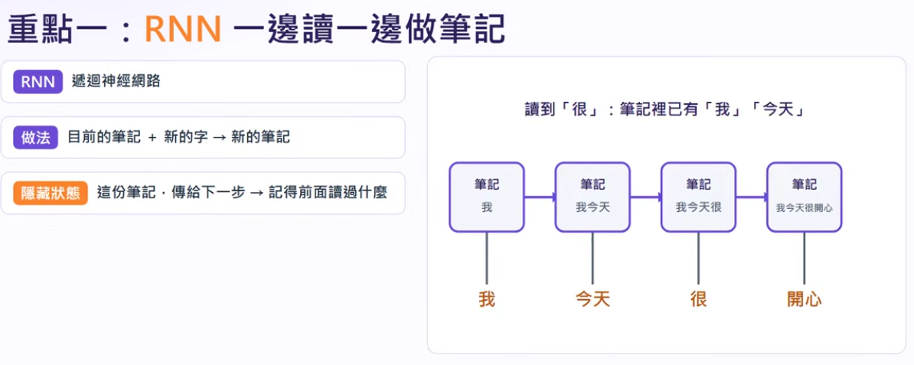
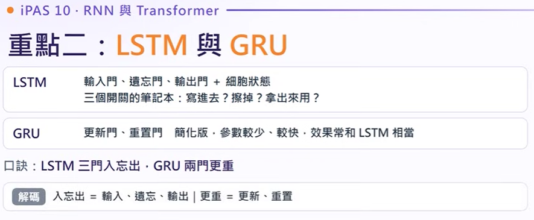
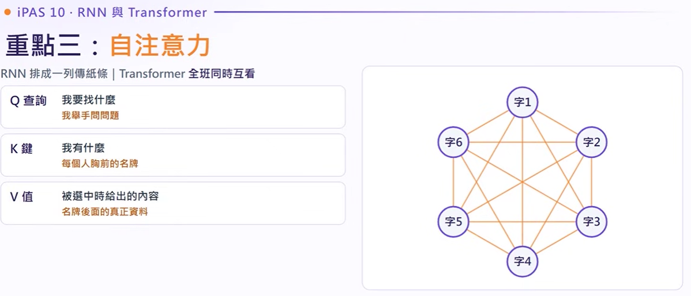
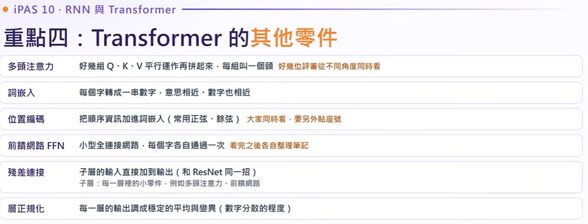
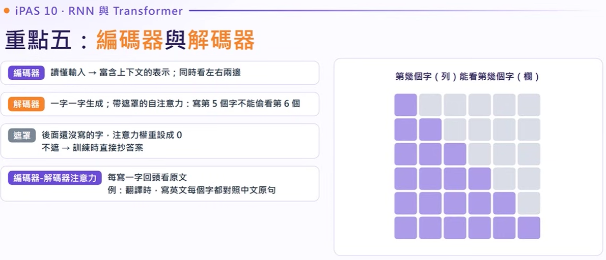
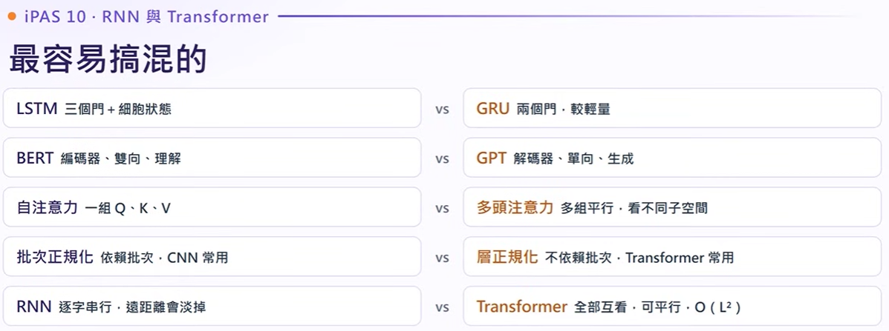
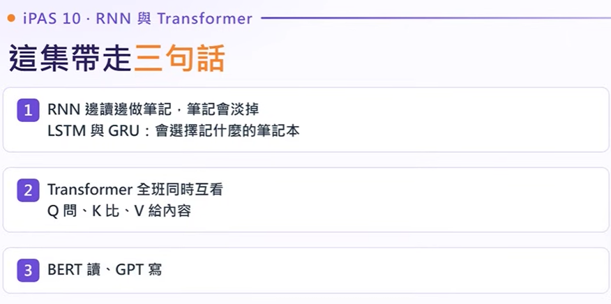

RNN 與 Transformer
從序列循環到全域自注意力的技術演進
專門處理「有順序的資料」（文字、語音、時間序列）。深入拆解遞迴神經網路（RNN）、門控機制（LSTM/GRU）、Transformer 架構中 QKV 矩陣運算以及 BERT 與 GPT 的本質差異，助您穩拿 iPAS 中級證照核心觀念。
一、RNN 遞迴循環基礎；二、LSTM 與 GRU 門控解救長期記憶；三、自注意力 (Self-Attention) 突破序列長度與平行化；四、Transformer 其他關鍵零件（多頭、位置編碼、殘差、層正規化）；五、編碼器／解碼器與 BERT、GPT 雙雄實戰對決。
RNN 邊讀邊做筆記但會淡掉；LSTM/GRU 則是有開關、會選擇要記什麼的智慧筆記本。
全班同時互看：Q 提問、K 亮名牌、V 給真內容，運算全平行化！
BERT 讀（雙向編碼擅長語意理解），GPT 寫（單向自回歸擅長文字生成）。
重點一：RNN 遞迴神經網路（Recurrent Neural Network）

• 做法：目前的筆記 ＋ 新進來的字 $ →$ 產生新的筆記；
• 隱藏狀態 ($h_t$)：這份筆記傳遞給下一步 $ →$ 記得前面讀過什麼；讀到「很」時，筆記中已有「我」「今天」的上下文！
• 致命傷：時間序列一拉長，連乘效應導致前面的字記憶淡掉（梯度消失）。
序列處理的起點：隱藏狀態與時間步
隱藏狀態（Hidden State）與傳紙條機制
RNN 每讀一個字，就把「目前的筆記（$h_{t-1}$）」和「新的字（$x_t$）」結合，計算出新的筆記（$h_t$），並傳給下一個時間步。
每一個時間步使用同一套權重矩陣。因此模型可以處理任意長度的句子，句子每增加一個字，僅是同一套權重多循環運算一次。
Backpropagation Through Time。將序列按時間軸攤開成極深的深層網路。一個 500 字的長篇序列攤開後如同 500 層神經網絡進行反向傳播。
RNN 的兩大致命缺點（考試高頻考點）
點擊下方序列中的時間步（Time Step），觀察隱藏狀態傳遞：
重點二：長短期記憶網路（LSTM）與 GRU

• LSTM：輸入門、遺忘門、輸出門 ＋ 細胞狀態輸送帶（三個開關的筆記本：寫進去？擦掉？拿出來用？）；
• GRU：更新門、重置門（簡化版，少一個狀態與一個門，參數量更少、訓練更快，效果相當）；
• 臨考必背口訣：「LSTM 三門入忘出，GRU 兩門更重」！
解決梯度消失的王牌：細胞狀態輸送帶與門控設計
考試秒殺口訣：三門入忘出，兩門更重！
LSTM 具備 3 個門：輸入門（Input）、遺忘門（Forget）、輸出門（Output）＋ 細胞狀態。
GRU 具備 2 個門：更新門（Update）、重置門（Reset），結構更精簡速度更快。
LSTM 架構：細胞狀態輸送帶
3 門 + 1 態細胞狀態（$C_t$）宛如一條輸送帶，貫穿整個序列。更新主要利用加法運算（留下一部分舊的，加上一點新的），避免連乘導致的信號歸零，因而大幅緩解梯度消失！
GRU（Gated Recurrent Unit）門控循環單元
2 門精簡版將細胞狀態與隱藏狀態合併，僅保留更新門（Update Gate）與重置門（Reset Gate）。參數量比 LSTM 少約 25%，訓練更快，且多數任務中表現相當。
雙向神經網路（Bi-directional RNN / LSTM）
句子「正向讀一次」＋「反向讀一次」，同時融合前後文脈絡。
重點三：自注意力機制（Self-Attention）與 QKV 計算

• RNN vs Transformer：RNN 像排成一列傳紙條；Transformer 像全班同學同時彼此互看！
• Q (查詢 Query)：我要找什麼？（我舉手提出問題）
• K (鍵 Key)：我有什麼？（每個人胸前掛的名牌特徵）
• V (值 Value)：被選中時給出的內容（名牌後面的真正豐富資料）。
打破序列藩籬：任兩字直接連結，徹底解放平行運算
如同學生舉手主動提問。代表當前詞彙主動向全句子其他詞彙探尋關聯的代表線索。
如同每位同學胸前佩戴的名牌。用來與每個 Query 計算相關度（點積 Dot-Product）。
名牌背後的真正知識資料。當 Query 與 Key 算出的權重越高，該詞的 Value 佔比就越大。
自注意力標準公式
Attention(Q, K, V) = Softmax( (Q · K^T) / √d_k ) · V
- 相似度比對：將每個字的 $Q$ 與所有字的 $K$ 進行向量點積。
- 縮放與歸一化：除以 $\sqrt{d_k}$ 避免數值過大，通過 Softmax 轉化為總和為 1 的注意力權重。
- 加權匯總：利用注意力權重對所有字的 $V$ 做加權加總，得到該字的新特徵。
當計算「他」時，它的 $Q$ 和「小明」的 $K$ 匹配度最高，獲得最大權重。新產生的表示向量中幾乎都融入了小明的 $V$，模型便能精確理解「他 = 小明」。
字向量維度為 $[1 \times 10]$，乘上查詢權重矩陣 $W_Q [10 \times 64]$：
[1 × 10] × [10 × 64] = [1 × 64]
中間維度 10 消除，最終產生的 Query 向量即為 64 維。
全局互聯 vs 序列瓶頸
O(1) 距離重點四：Transformer 的關鍵零件與正規化

• 多頭注意力 (MHA)：好幾組 Q/K/V 平行運作再拼起來，好幾位評審從不同角度同時看；
• 詞嵌入 (Embedding)：每個字轉成一串數字，意思相近、空間向量也相近；
• 位置編碼 (PE)：大家同時看會失去先後次序，要另外給每個人「貼座號」（正弦/餘弦）；
• 前饋網路 (FFN)：看完之後各自整理消化筆記；
• 殘差連接 & 層正規化 (Add & Norm)：直接加回輸入防梯度消失，並穩定數值分佈。
多頭注意力、位置編碼、前饋網路、殘差連接與 LayerNorm
多頭注意力 (Multi-Head)
★ 考點：從不同表示子空間捕捉多種關係好幾組 QKV 平行運作最後拼起來。各「頭」從不同角度分工：一個看文法句法、一個看實體指代、一個看語意情感。 ※ 觀念澄清：參數沒有變少，速度也沒有加快！
位置編碼 (Positional Encoding)
★ 考點：為同時輸入的詞補充順序資訊全班同時看時，模型無法分辨「狗咬人」與「人咬狗」。因此必須用正弦（Sin）與餘弦（Cos）函數產生數字，如同給每個字「貼上座號」加入詞向量中。
前饋網路 (FFN)
★ 特性：每個位置獨立非線性轉換小型全連接層。當所有詞經過注意力交換完資訊後，各自獨立通過一次 FFN，像各成員互相討論完畢後各自整理自己的筆記與深度特徵。
殘差連接 (Add / Residual)
★ 功用：解決深層網路梯度消失公式：$x + \text{Sublayer}(x)$。輸入不經破壞直接「跨越」疊加至輸出，為反向傳播提供梯度捷徑（與 ResNet 同理）。
層正規化 (LayerNorm) vs 批次正規化 (BatchNorm)
自然語言處理與序列模型的關鍵決策拿同一批（Batch）好幾筆資料一起算平均與變異數。當 Batch 較小或文本句子長短不一時算不穩。
單一樣本自己內部特徵做正規化，不依賴批次大小（Batch Size），因此即便文本長度不同也能非常穩定訓練！
重點五：編碼器、解碼器與 BERT vs GPT 終極對決

• 編碼器 (Encoder)：讀懂輸入，同時看左右兩邊上下文（如 BERT，擅長分類與問答理解）；
• 解碼器 (Decoder)：一字一字自回歸生成，具備帶遮罩的自注意力 (Masked Attention)（寫第 5 個字不能偷看第 6 個，後面權重強制設為 0，如 GPT）；
• 編碼-解碼交叉注意力：每寫一個字回頭看原文（如翻譯時寫英文對照中文）。
雙向理解 vs 單向生成：模型架構與適用場景完整剖析
BERT
• 核心特性：只採用編碼器（Encoder），具備雙向上下文視野，能同時綜觀左右前後文。
• 兩大預訓練機制：
- MLM（Masked LM）：隨機把字遮住（如 [MASK]），讓模型看前後文猜字（克漏字填空）。
- NSP（Next Sentence）：判斷第二句是否為第一句的接續句。
• 最佳適用場景：文本分類、情感分析、閱讀理解與問答抽取、實體識別（NER）。
GPT 系列
• 核心特性：只採用解碼器（Decoder），進行單向自回歸（Autoregressive）文字接龍。
• 帶遮罩自注意力（Masked Attention）：
生成第 5 個字時，絕對不能偷看第 6 個字。將未來詞彙注意力權重全設為 0，避免訓練時抄答案。
• 自回歸機制：每產出一個字，便接回輸入端作為上下文，持續迭代輸出下一個字。
• 最佳適用場景：文章寫作、對話機器人、創意續寫、代碼生成。
Transformer 衍生明星家族模型速查
Encoder + Decoder 完整架構，統一將所有任務（翻譯、摘要、問答）皆包裝成「文字進、文字出」。
影像領域革新！將圖片切成 $16 \times 16$ 小圖塊（Patches）當成單詞傳入 Encoder 進行影像分類。
採用「稀疏局部注意力」，每個字僅看鄰近與少數錨點字，成功打破 $O(N^2)$ 記憶體膨脹，支援萬字長文。
歷屆 iPAS 真題深度實戰
點擊選項立即檢測學習成效與觀念解析
下列四個應用情境中，哪一個最適合採用 LSTM 模型進行開發？
電力需求為具備前後時間順序的「時間序列」，需仰賴 LSTM 記憶歷史趨勢。其他選項分別適用 CNN (A)、K-Means (B) 與 Autoencoder/PCA (D)。
合約審查系統需比對首頁與第 20 頁的責任條款，雙向 LSTM 抓不到長距離關聯且訓練慢，改用 Transformer 後大幅改善，主因為何？
自注意力使任意距離的 Token 距離恆為 1，直接拉近第 1 頁與第 20 頁關聯，且無須循環依賴，運算可極大平行化！
語音辨識團隊採用多頭注意力（Multi-Head Attention）期望模型同時理解發音、語速與語意，多頭注意力的核心作用是？
多頭注意力讓每個 Head 獨立關注不同面向（如一個看發音、一個看語意）。參數量並未減少，加速也不是其目的，防梯度消失是殘差連接與 LayerNorm 的職責。
法律生成系統要續寫合約後半段條款，BERT 的生成效果顯著劣於 GPT-2，且「增加更多訓練資料也無法改善」，主要原因為何？
關鍵在「增加資料也無用」！這意味著瓶頸在於模型架構先天設計。BERT 採雙向填空訓練，缺乏逐字預測下一個詞的單向 Decoder 自回歸機制，因此無法勝任生成任務。

1. LSTM（三個門 ＋ 細胞狀態） vs GRU（兩個門，較輕量、參數少）；
2. BERT（純編碼器、雙向、擅長理解） vs GPT（純解碼器、單向、擅長生成）；
3. 自注意力（一組 QKV） vs 多頭注意力（多組平行投影，捕捉多個子空間關聯）；
4. 批次正規化 (BN)（依賴 Batch 統計，CNN 愛用） vs 層正規化 (LN)（不依賴 Batch，Transformer 必備）；
5. RNN（逐字串行，長序列淡掉） vs Transformer（全部互看，高度平行化，但長度複雜度為 $O(L^2)$）。
考前 3 分鐘速記總匯（對比錦囊）
LSTM 具備 3 個門（輸入、遺忘、輸出）＋細胞狀態輸送帶；GRU 僅 2 個門（更新、重置）較輕量迅速。
BERT 為純 Encoder，雙向上下文擅長「理解」；GPT 為純 Decoder，單向自回歸遮罩擅長「生成」。
BatchNorm 依賴同一批次跨樣本統計（CNN 愛用）；LayerNorm 對單一樣本內部所有維度正規化，不依賴 Batch 大小（Transformer 愛用）。
RNN 逐字循環存在時間瓶頸與梯度消失；Transformer 全班互看完全平行，但運算量隨序列平方（$O(N^2)$）增長。
這集帶走三句話：全篇臨考 30 秒極速精華總結

① RNN 邊讀邊做筆記，筆記會淡掉；LSTM 與 GRU：會選擇記什麼的智慧筆記本；
② Transformer 全班同時互看：Q 問、K 比、V 給內容；
③ 「BERT 讀（理解）、GPT 寫（生成）」！